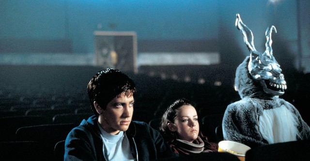

PRODUCCIÓN CINEMATOGRÁFICA
Jake Gyllenhaal reflexiona sobre el final de Donnie Darko, 23 años después
En una reciente entrevista, Jake Gyllenhaal habló sobre la complejidad emocional de interpretar a Donnie
En una reciente entrevista, Jake Gyllenhaal habló sobre la complejidad emocional de interpretar a Donnie

En Reddit circula una teoría que asegura que Donnie no fue el primer "receptor viviente" del universo tangente. Basándose en las pistas del libro de la pelicula.

Si eras un adolescente peculiar —curioso, cínico, quizá un poco pretencioso—, Donnie Darko probablemente te significó mucho. Quizás te advirtieron sobre lo que te esperaba: una extraña comedia dramática de ciencia ficción sobre un adolescente suburbano con problemas que provoca, y luego previene, el fin del mundo, con la ayuda de un aterrador y posiblemente imaginario hombre-conejo. O quizás alguien te dio el DVD, con su inescrutable mezcla de caras flotantes rodeando la cabeza de un conejo , y te prometió que te volaría la cabeza. A principios de los 2000, basándose casi exclusivamente en el boca a boca (o en los chats de AIM), Donnie Darko superó un estreno inestable en cines para unirse a Memento y Fight Club como la Santísima Trinidad de las Películas que Ves Porque Eres un Adolescente Profundo. (Si eras un poco loco, también podías incluir Réquiem por un Sueño ).
Y si Donnie Darko sobrevivió inicialmente gracias a los ansiosos viajes de miles de adolescentes a su Best Buy local a principios de la década de 2000, nunca desapareció por completo. Aunque fracasó estrepitosamente en su lanzamiento inicial (una película sobre un motor a reacción que se estrella contra una casa resultó ser una venta difícil solo unas semanas después del 11 de septiembre), Donnie Darko fue un éxito lo suficientemente grande en DVD como para que el escritor y director Richard Kelly tuviera la oportunidad de supervisar un Director's Cut especial , completo con un lanzamiento limitado en cines, solo tres años después. Y conserva una huella cultural sorprendentemente sólida. Donnie Darko tuvo otro relanzamiento (esta vez en 4K) el año pasado, lo que inspiró una nueva ola de retrospectivas optimistas.
Donnie, Gretchen (Jena Malone) y dos amigos van en busca de Sparrow, pero son atacados por un par de tipos en mitad de la calle. Golpean a Gretchen, que cae en la carretera y es atropellada por un coche. El conductor no es otro que Frank, que va vestido de conejo porque es Halloween y no tiene ni idea que él es la figura que se le aparece a Donnie en sus alucinaciones. El protagonista coge una pistola y le dispara en el ojo, provocando la herida que vimos anteriormente cuando Frank enseñó su cara en la sala de cine. Donnie lleva el cuerpo de Gretchen a lo alto de la montaña, y ve desde la lejanía un vórtice en el cielo, el responsable de que el mundo esté a punto de colapsar. Desde allí, ve el avión en el que viaja su madre con las niñas, que queda atrapado en esa especie de tornado y va camino de estrellarse.
En ese momento, sabemos que Donnie entiende algo: nada de lo anterior hubiese sucedido si él hubiese muerto en el accidente al inicio de la película. Así, vuelve atrás en el tiempo y esta vez se queda en su habitación mientras el motor del avión le aplasta y muere. Se sacrifica para que todos los demás puedan vivir y se alza como héroe de la historia. Pero, claro, hay mucho más que rascar en este relato simple de los hechos.